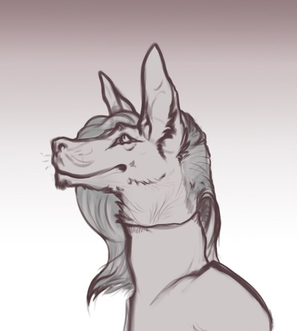
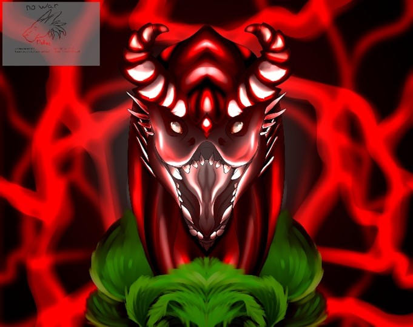

Он\Она|Genshin Impact|Пансексуал|26.03.2000|Овен
Я запрещаю использовать мои работы в своих
целях.
Также запрещено любое распространение, переделка, присваивание.
Commissions: Art Trades: Collabs:
Здесь не будет какого-либо развития, только множество ссылок, випов и по возможности оффтопов. Если вам удобно, вы можете найти меня по источникам ниже:
Основа: Покрас, Лайн, Фон.
Дополнения: Вы можете попросить художника
исправлять детали, которые не связаны с его стилем. Т.е. например форма лапки:
вы можете попросить художника развернуть лапку, исправить форму когтей, но не
можете попросить нарисовать лапку в стиле художника А.
Любые мельчайшие детали могут быть
исправлены, дополнены, в случае если художник считает, что это исправление
имеет свое место.
Максимальное количество допущенных
исправлений: 50. В противном случае с вас берётся плата размером в 25% от
стоимости рисунка.
A – Мягкая стилистика. B – Твёрдая стилистика. C – Чиби стилистика.
A – Мягкая стилистика.
B – Твёрдая стилистика.
C – Чиби стилистика.
A1 – 1200р
B1 – 1500р
C1 – 800р
A2 – 900р
B2 – 1100р
C2 – 500р
A3 – 700р
B3 – 900р
C3 – 400р
Full – 3000р Fullbody – 2000р Head – 800р
Данный прайс установлен на момент 26.03.2022.
Связаться с художником вы можете так же следующим
образом:
e-mail: mellovise@yandex.ru
VK: https://vk.com/daingey
Discord: Котелта#4329
В качестве моих знакомых и друзей вы могли
когда-то встречать:
SapCryper, FroxiFox,
Christine Vivaldi, Abyss.